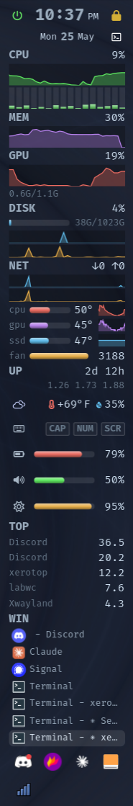

xerotop
a battery-conscious system monitor for wayland.

A gkrellm-style system monitor for Wayland (wlroots / layer-shell), in Rust + GTK4. A vertical (or horizontal) stack of live meters — CPU & per-core, memory, GPU, disk, network, temps/fans, battery, volume, brightness, top processes, uptime, keyboard LEDs, weather, mail — plus a real taskbar and system tray, all in one process with zero subprocesses.
It's the successor to an ewwii-based bar that spawned ~600 shell processes
per second to poll metrics. xerotop reads /proc, /sys,
ALSA and statvfs natively and redraws only when new data arrives.
design principles
- battery-first. one scheduler, one timer; on battery every interval stretches by a configurable multiplier. with stepped graphs there are no extra wakeups; the default smooth scrolling animates via a frame clock (toggle off for minimal wakeups).
- single process. metrics, taskbar (wlr-foreign-toplevel), tray (StatusNotifier) and weather — no IPC, no sockets, no helper daemons.
- worse-is-better. the smallest thing that genuinely works, then iterate.
- configure by prefs, not a config language. plain, stable TOML, boring on purpose, never rug-pulled.
- orientation-agnostic. vertical and horizontal bars share one layout model.
what's in it
- layer-shell bar on any edge — thickness, length (full / fixed), alignment, stacking layer, monitor, opacity
- meters: CPU, per-core mini-bars, MEM, GPU, DISK (usage bar + I/O graphs), NET — ewwii-style dynamic min..max graphs
- fully configurable
sensorspanel — pick any hwmon temp/fan/voltage, label / color / reorder + averaged row - battery, volume, brightness (scroll & click), top processes, uptime, keyboard LEDs, weather (report on hover)
- maildir unread/total (envelope + count, off-thread; hides where there's no maildir)
- styled clock with 4 configurable header icon slots (custom glyph + command + color each)
- taskbar (wlr-foreign-toplevel) and system tray (StatusNotifier) with cascading hover menus
- live preferences GUI (right-click the bar or --prefs) — General / Theme / Layout (drag to reorder) / Panels (master-detail per-panel config), applies instantly
- data-driven themes (colors + font tiers); save palette+fonts, or bundle the panel colors into the theme too
- planned: load-avg / MPRIS / network-info panels, multiple bars, occlusion-aware pausing
build & run
# needs GTK4, gtk4-layer-shell, and a wlroots compositor (labwc, sway, …)
cargo build --release
./target/release/xerotop
Pinned to gtk4-rs 0.10 so it builds on Rust 1.89.
configure
first run writes ~/.config/xerotop/config.toml — or just use the GUI:
theme = "default" [bar] edge = "right" # left | right | top | bottom thickness = 150 # px length = "full" # "full" or a pixel count opacity = 0.88 [[panel]] type = "cpu" interval = 2 graph = true